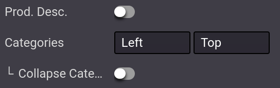
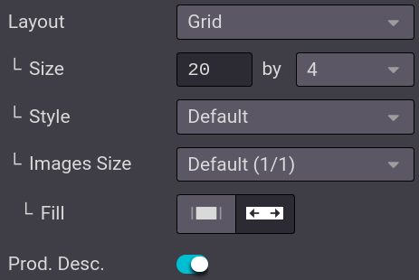
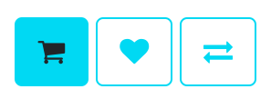
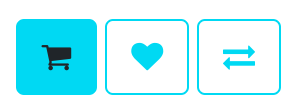

Catalog¶
The eCommerce catalog is the equivalent of your physical store shelves: it allows customers to see what you have to offer. Clear categories, available options, sorting, and navigation threads help you structure it efficiently.
Categorize the product catalog¶
In Odoo, there is a specific category model for your eCommerce. Using eCommerce categories for your products allows you to add a navigation menu on your eCommerce page. Visitors can then use it to view all products under the category they select.
To do so, go to , select the product you wish to modify, click on the Sales tab, and select the Categories you want under eCommerce Shop.

Note
A single product can appear under multiple eCommerce categories.
When your product’s categories are configured, go to your main shop page and click on . In the Categories option, you can either enable a menu on the Left, on the Top, or both. If you select the Left category, the option Collapsable Category Recursive appears and allows to render the Left category menu collapsable.
See also
Browsing¶
The eCommerce category is the first tool to organize and split your products. However, if you need an extra level of categorization in your catalog, you can activate various filters such as attributes or sort-by search.
Attributes¶
Attributes refer to characteristics of a product, such as color or material, whereas variants are the different combinations of attributes. Attributes and Variants can be found under , select your product, and Attributes & Variants tab.
See also

To enable attribute filtering, go to your main shop page, click on and select either Left, Top, or both. Additionally, you can also enable Price Filtering to enable price filters.
Note
Price Filter works independently from attributes and, therefore, can be enabled on its own if desired.
Tip
You can use attribute filters even if you do not work with product variants. When adding attributes to your products, make sure only to specify one value per attribute. Odoo does not create variants if no combination is possible.
Sort-by search¶
It is possible to allow the user to manually sort the catalog using the search bar. From your main shop page, click on ; you can enable or disable the Sort-By option as well as the Layout button. You can also select the Default Sort of the Sort-By button. The default sort applies to all categories.
The sorting options are:
Featured
Newest Arrivals
Name (A-Z)
Price - Low to High
Price - High to Low
In addition, you can manually edit the catalog’s order of a product by going to the main shop
page and clicking on the product. Under the Product section of the
Customize section, you can rearrange the order by clicking on the arrows. << >> move
the product to the extreme right or left, and < > move the product by one row to the
right or left. It is also possible to change the catalog’s order of products in
and drag-and-dropping the products within the
list.

Page design¶
Category page¶
You can customize the layout of the category page using the website builder.
Important
Editing the layout of the category page is global; editing one category layout affects all category pages.
To do so, go on to your . Here, you can choose the layout, the number of columns to display the products, etc. The Product Description button makes the product description visible from the category page, underneath the product picture.
Tip
You can choose the size of the grid, but be aware that displaying too many products may affect performance and page loading speed.
Product highlight¶
You can highlight products to make them more visible on the category or product page. On the page of your choice, go to and click on the product to highlight. In the Product section, you can choose the size of the product image by clicking on the grid, and you can also add a ribbon or Badge. This displays a banner across the product’s image, such as:
Sale;
Sold out;
Out of stock;
New.
Alternatively, you can activate the developer mode on the product’s template, and under the Sales tab, change or create the ribbon from the Ribbon field.
Note
The developer mode is only intended for experienced users who wish to have access to advanced tools. Using the developer mode is not recommended for regular users.

Additional features¶
You can access and enable additional feature buttons such as add to cart, comparison list, or a wishlist. To do so, go to your main shop page, and at the end of the Products Page category, click on the feature buttons you wish to use. All three buttons appear when hovering the mouse over a product’s image.
Add to Cart: adds a button to add the product to the cart;
Comparison List: adds a button to compare products based on their price, variant, etc.;
Wishlist Button: adds a button to wishlist the product.
 

Add content¶
You can use building blocks to add content on the category page, with a variety of blocks ranging from Structure to Dynamic Content. Specific areas are defined to use blocks are defined and highlighted on the page when dragging-and-dropping a block.

If you drop a building block on top of the product list, it creates a new category header specific to that category.
If you drop a building on the top or bottom of the page, it becomes visible on all category pages.
Tip
Adding content to an eCommerce category page is beneficial in terms of SEO strategy. Using keywords linked to the products or the eCommerce categories improves organic traffic. Additionally, each category has its own specific URL that can be pointed to and is indexed by search engines.